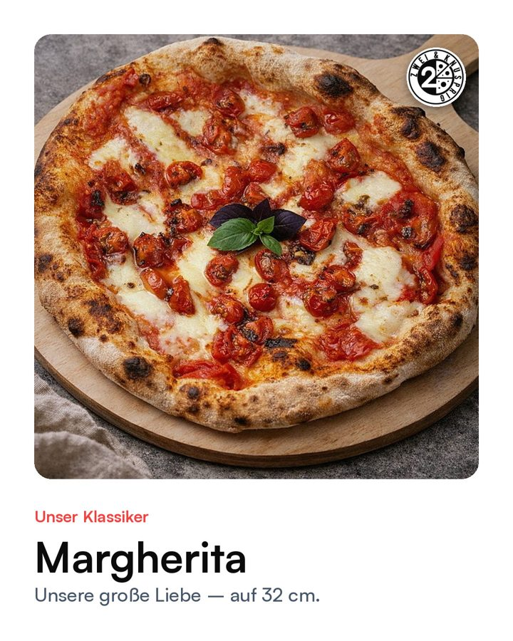
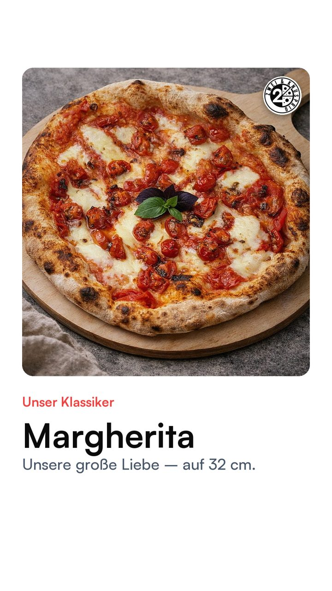

27.11.2026
Freitag, 27. November
Margherita

⚠ HTTP 400 bei graph.facebook.com: API access blocked.
Bildunterschrift
Manchmal braucht es nicht mehr als drei Zutaten. 🍅 Unsere Margherita: luftiger Rand, lange gereifter Teig, frisch aus dem Ofen. So schmeckt Pizza, wie wir sie lieben. Du planst eine Feier in Chemnitz oder Umgebung? Schreib uns – Link in Bio. #pizza #pizzachemnitz #chemnitz #neapolitanischepizza #pizzaliebe #handgemacht #sachsen #zweiundknusprig

⚠ HTTP 400 bei graph.facebook.com: API access blocked.
Story – ohne Text